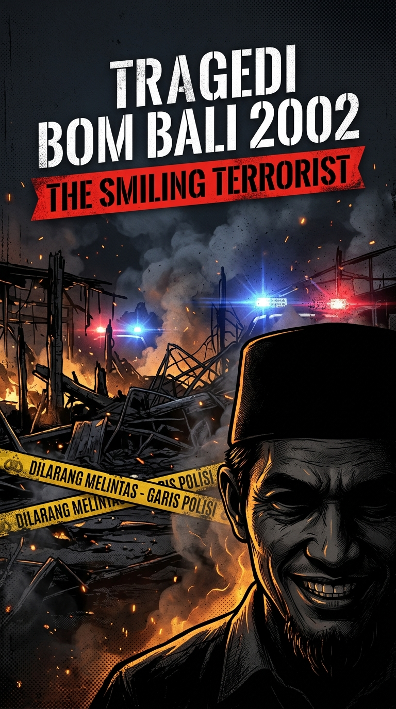

Tragedi Bom Bali 2002: The Smiling Terrorist (Amrozi)
Vertical Video 9:16 (1080x1920 @ 30fps) • Google Gemini Charon VO • 2 Google Flow Moving Keyframes • Dual-Layer Typography
88.2s
Durasi Video
14 Beats
Zero Repetition
2 Videos
Flow Moving
Charon Gemini
Klenik Warmth VO
DISTRIBUSI SOSMED (VIRAL INSTAGRAM REELS KIT)
📱 FORMAT INSTAGRAM REELS:
Dua ratus dua nyawa melayang di Jalan Legian Kuta... Tapi saat tertangkap, pria ini justru tertawa dan mengacungkan jempol ke kamera. Dunia menjulukinya: The Smiling Terrorist. 🚨⛓️
12 Oktober 2002 menjadi malam paling kelam dalam sejarah pariwisata Indonesia. Ledakan beruntun di Paddy's Pub dan Sari Club meluluhlantakkan pusat keramaian Kuta.
Namun kejahatan tak pernah sempurna:
🔍 Serpihan nomor rangka mobil Mitsubishi L300 yang terbakar menuntun tim gabungan forensik Polri ke sebuah bengkel di Desa Tenggulun, Lamongan.
👥 Terbongkar jaringan terorisme terencana yang dipimpin trio bersaudara: Mukhlas sebagai pengendali taktik, Ali Imron sebagai perakit teknis, dan Amrozi sebagai penyedia logistik & satu ton bahan kimia.
⚖️ Pengadilan Negeri Denpasar menjatuhkan vonis mati. 9 November 2008, Amrozi dieksekusi di Bukit Nirbaya, Nusakambangan.
Simak rekonstruksi forensik dan fakta hukum atas salah satu babak investigasi terbesar di tanah air.
#BomBali #TragediBali2002 #Amrozi #TheSmilingTerrorist #TrueCrimeIndonesia #DokumenterKriminal #PoldaBali #ForensikPolri #InvestigasiSejarah #InstagramReels #viral #fyp
📺 FORMAT YOUTUBE SHORTS / TIKTOK:
KRONOLOGI INVESTIGASI BOM BALI 1: THE SMILING TERRORIST 🚨
Dari dentuman di Sari Club Kuta hingga pelacakan nomor rangka L300 ke Lamongan. Terungkap peran Amrozi, Mukhlas, dan Imam Samudra sebelum vonis mati di Nusakambangan. Simak kronologi lengkapnya!
#Shorts #BomBali #Amrozi #TrueCrime #InvestigasiKriminal #SejarahKelam
TIMELINE 18 VISUAL BEATS (ZERO REPETITION)

Cover (0s - 1.3s)

Beat 01 (4.94s)
Beat 02 (6.18s)

Beat 03 (6.42s)

Beat 04 (7.7s)

Beat 05 (4.87s)

Beat 06 (5.61s)
Beat 07 (6.2s)

Beat 08 (7.44s)

Beat 09 (5.86s)

Beat 10 (6.74s)

Beat 11 (5.56s)

Beat 12 (6.4s)

Beat 13 (5.92s)

Beat 14 (7.11s)